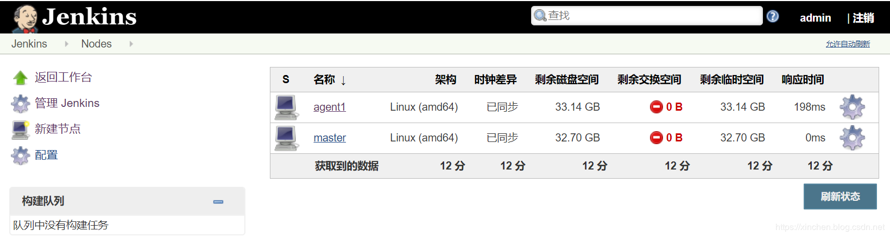
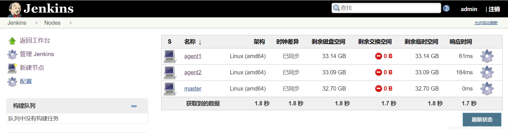

在Jenkins上同时执行多个任务时，单机性能可能达到瓶颈，使用Jenkins集群可以有效的解决此问题，让多台机器同时处理这些任务可以将压力分散，对单机版Jenkins的单点故障的隐患也有分散作用，今天就来实战快速搭建Jenkins集群，Jenkins版本是2.190.2；
通过Docker可以省去大部分准备工作，您只需在Linux电脑上安装docker，在辅以少量命令和操作即可完成集群搭建；
本次实战的环境一共要用三台电脑，它们的设置都是一样的，如下：
三台电脑的信息如下：
| 主机名 | IP地址 | 作用 |
|--|--|--|
| master | 192.168.133.131 | Jenkins集群的master节点，提供web服务 |
| agent1 | 192.168.133.132 | Jenkins集群的一号工作接节点，标签是maven |
| agent2 | 192.168.133.133 | Jenkins集群的二号工作接节点，标签是gradle |
建议agent2节点的内存大于4G，因为下一篇的实战操作会用agent2编译构建spring-framework，对内存的需求略大；
在每台电脑上创建文件夹/usr/local/jenkins
docker run \
-u root \
-idt \
--name master \
-p 8080:8080 \
-p 50000:50000 \
-v /usr/local/jenkins:/var/jenkins_home \
-v /var/run/docker.sock:/var/run/docker.sock \
jenkinsci/blueocean:1.19.0接下来是创建管理员和使用实例url的操作，这里就不多说了，您按实际情况自行斟酌；
至此，Jenkins的master已经搭建好，接下来将agent1和agent2作为工作节点加入集群；
docker run \
-u root \
-idt \
--name agent \
-v /usr/local/jenkins:/usr/local/jenkins \
bolingcavalry/openjdk-with-sshpass:8u232 \
java -jar /usr/local/jenkins/agent.jar \
-jnlpUrl http://192.168.133.131:8080/computer/agent1/slave-agent.jnlp \
-secret 44c3e8d1531754b8655b53294bbde6dd99b3aaa91a250092d0d3425534ae1058 \
-workDir "/usr/local/jenkins"上述命令中的后半部分，即java -jar ......就是前面图片红框中的agent1启动命令，唯一要改变的是将agent.jar改成绝对路径/usr/local/jenkins/agent.jar
FROM openjdk:8u232
ARG DEBIAN_FRONTEND=noninteractive
RUN apt-get update && apt-get install --assume-yes sshpass去Jenkins的网页上查看节点列表，如下图，可见agent1已经成功加入：

此时agent2也加入成功：

至此，Jenkins集群搭建完成，这两个节点带有不同的标签，下一篇文章《Jenkins集群下的pipeline实战》中，我们在这个集群环境创建pipeline任务，并通过标签被分配到不同的节点上，实现多节点并行执行；